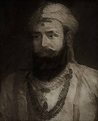
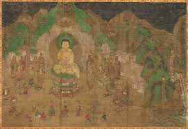

Bimbisara

Bimbisara fue uno de los primeros gobernantes del reino de Magadha, conocido por su patrocinio del budismo. También conocido como Seniya Bimbisara, contribuyó decisivamente a sentar las bases para la expansión del Imperio Maurya en la India. Fue uno de los contemporáneos y protectores de Buda y estableció la tercera dinastía gobernante de Magadha, conocida como la dinastía Haryanka. Bimbisara fue el primer monarca en establecer un ejército permanente.
Bimbisara es identificado como el primero de los 24 Tirthankaras según la tradición jainista. Bimbisara sentía igual reverencia por el budismo y el jainismo, apoyándolos por igual. Se dice que gobernó desde un lugar conocido como Girivraja, también conocido como Rajagriha. Según la evidencia histórica, construyó la ciudad de Rajgir, actualmente ubicada en Bihar. Conocido como un gobernante bondadoso y generoso, también es famoso por sus avances culturales durante su reinado.
| Aspecto | Descripción |
|---|---|
| Origen y Ascenso | Bimbisara nació en el 558/559 a. C. y asumió el trono de Magadha a los 15 años. Fue hijo del cacique Bhattiya. Su primera campaña fue contra el reino de Anga. |
| Conquistas y Comercio | Conquistó Anga, colocó a su hijo Ajatashatru como gobernador y fortaleció el comercio gracias al acceso a rutas oceánicas. Fundó la dinastía Haryanka. |
| Alianzas Matrimoniales | Formó alianzas con Kosala, Vrijjis y el clan Madri mediante matrimonios políticos, lo cual consolidó su poder y fortaleció las relaciones diplomáticas. |
| Relación con el Budismo | Apoyó activamente a Buda, hospedándolo en Veluvana. Propuso reglas monásticas y alentó a su familia a seguir el budismo. Su esposa Khema se unió a la Sangha. |
| Relación con el Jainismo | Según fuentes jainistas, Bimbisara fue influenciado por Mahavira y visitaba su sala de predicación. Se dice que renacerá como un Tirthankara en un ciclo futuro. |
| Administración | Organizó una administración eficiente con 70,000 aldeas y un sistema fiscal estructurado. Nombró oficiales en diferentes niveles y estableció divisiones militares. |
| Ejército y Recursos | Estableció una armada y un ejército con caballería, carros, infantería y elefantes. Aprovechó recursos minerales, bosques y tierras fértiles del Ganges. |
Años Posteriores

El hijo de Bimbisara, Ajathashathru, ambicionaba el trono de Magadha. Sus intenciones se vieron impulsadas por el mal consejo de un monje budista llamado Devadatta. Devadatta esperaba conseguir un puesto en el país, algo que le resultaría difícil en presencia de Bimbisara. Así, logró convencer a Ajatashatru de usurpar el trono de Magadha y ejecutar a su padre, Bimbisara. Ajatashatru se arrepintió más tarde del acto cometido y supuestamente conoció a Buda.
Bimbisara fue fundamental en la expansión del Imperio Magadha gracias a su enfoque estratégico, su administración eficiente y sus políticas de tolerancia religiosa. Diversas evidencias sugieren que generó un impacto cultural positivo en la población de Magadha. También fomentó las artes y la artesanía en el reino. Es recordado por la expansión del Imperio Magadha, fortalecido por la administración y el comercio.
Imperio Maurya